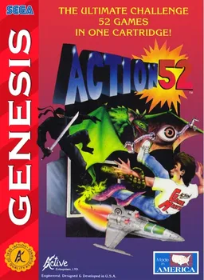

Action 52
action-52
État : résolu
Source : libretro
Méthode : override
Fichier source : Action 52 (USA) (Unl).png
Fichier final : /covers/megadrive/action-52.webp
Région : USA · score 1.000
Candidats refusés ou à vérifier
- NBA Action '95 Starring David Robinson (Europe).png — 0.163
- Puzzle _ Action - Ichidanto-R (World) (Ja) (Sega Ages).png — 0.150
- Last Action Hero (USA, Europe).png — 0.200